规定初始像素覆盖已通过独立数据验收，完整12步与物理安全未通过。Prescribed initial pixel coverage passes the independent DATA audit; full12-step and physical acceptance remain incomplete. Original1280×720; no edits/crop. Every image below is INITIAL, not micro1/final.
{"seed": 3, "proposal_id": 2338, "global_id": 33058, "family": 2}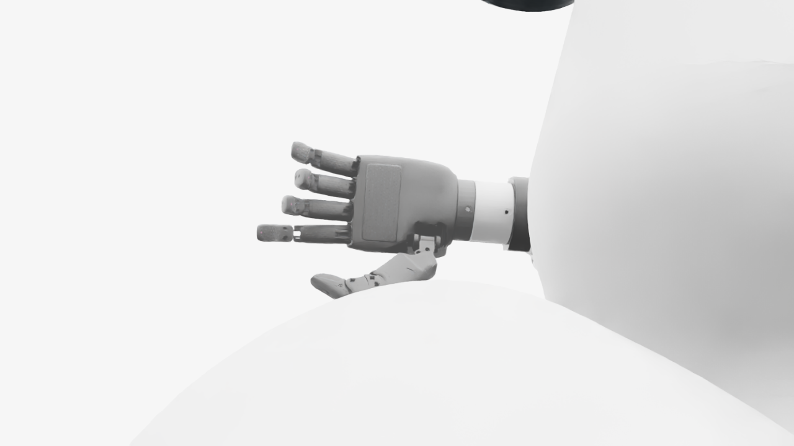
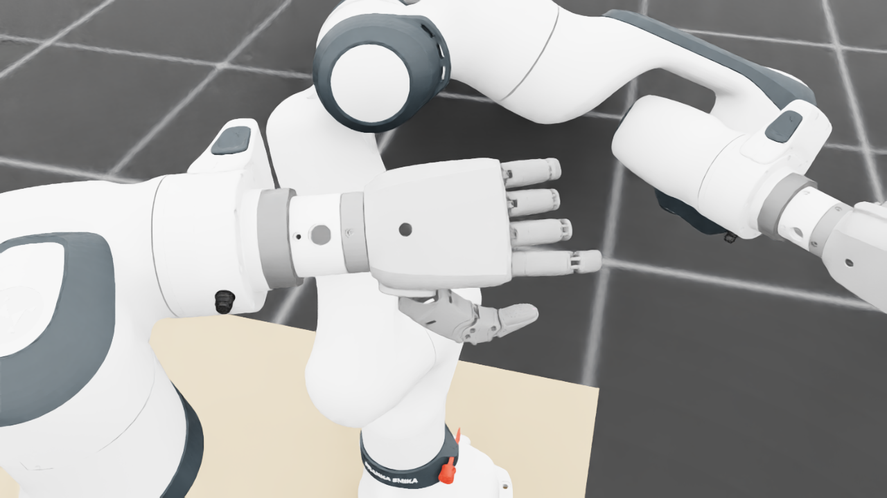
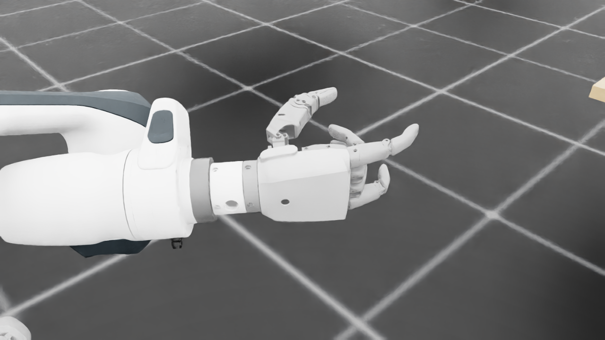
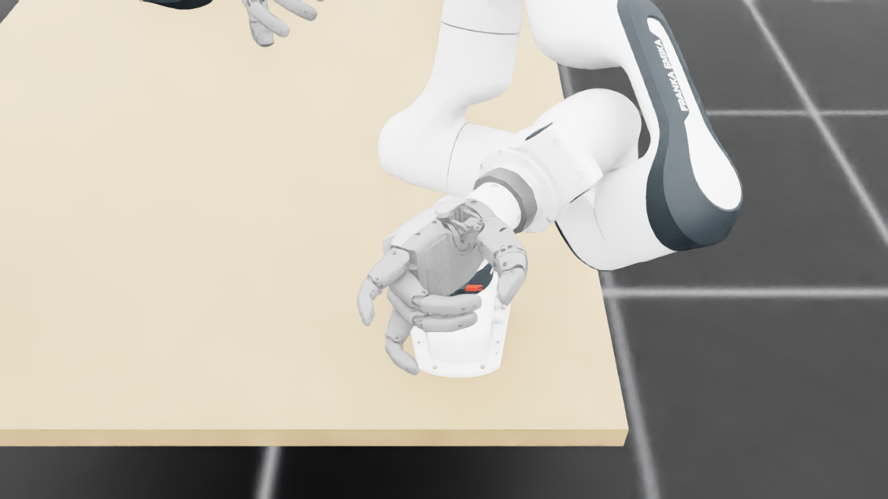
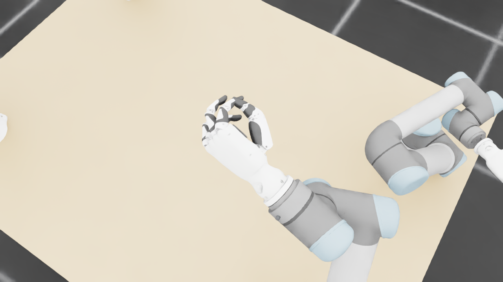
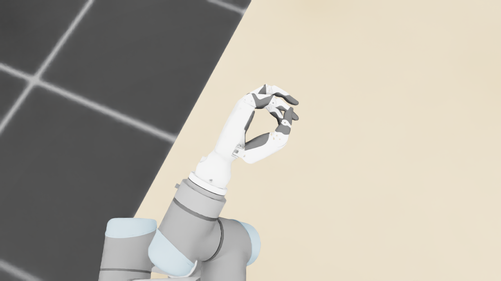
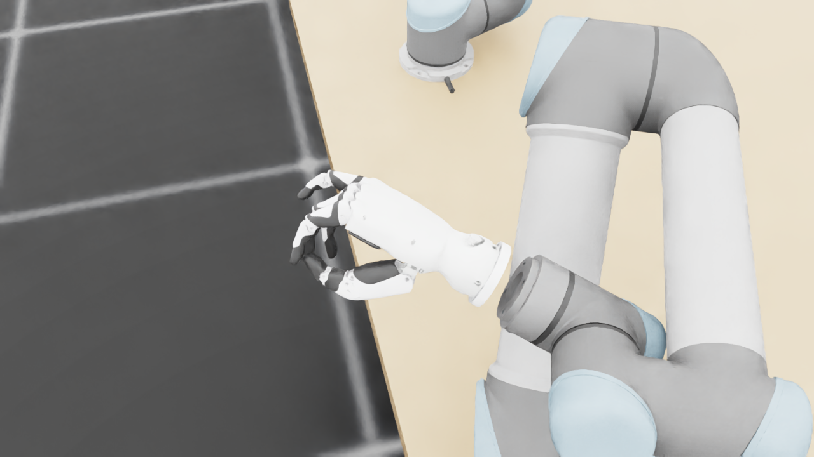
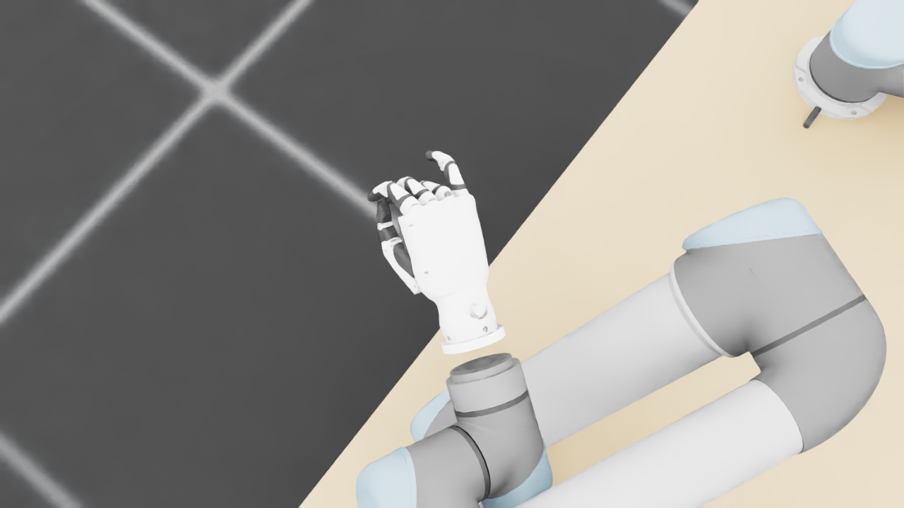
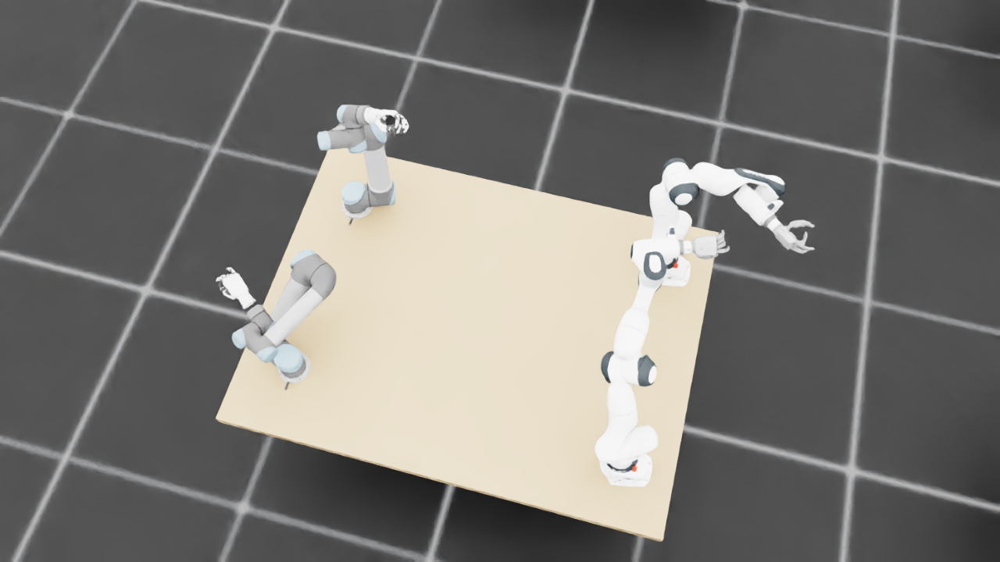
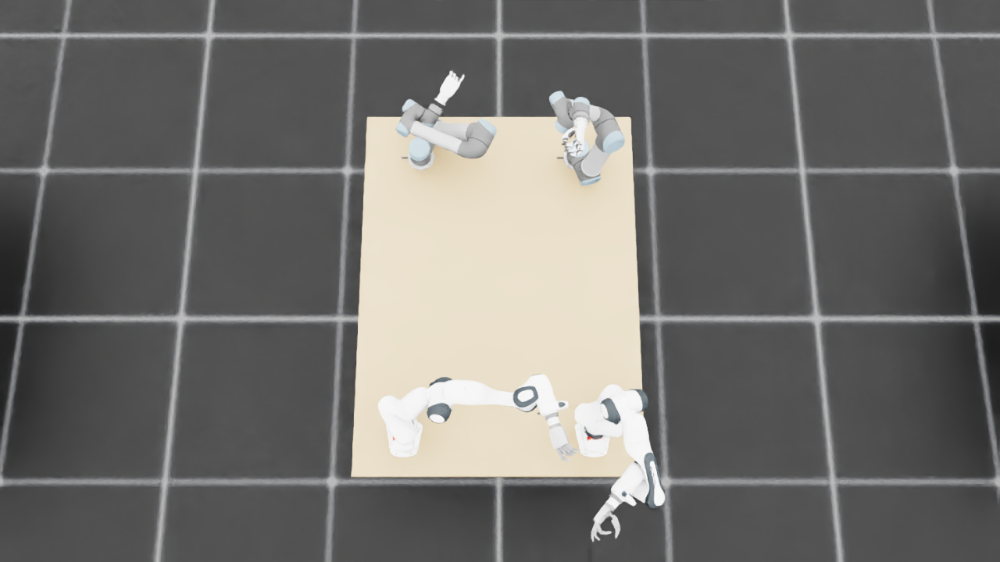
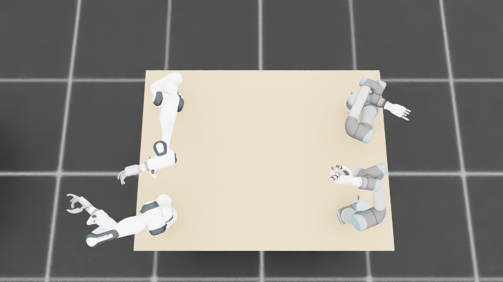
{
"qualified": true,
"arms": {
"F_L": {
"qualified": true,
"palm_visual_peak_pixels": 41625,
"finger_family_peak_pixels": {
"thumb": 9294,
"index": 5053,
"middle": 4949,
"ring": 4647,
"little": 4745
},
"per_native_body_peak_pixels": {
"/World/envs/env_28/F_L/f2_hand/left_hand_base": 50405,
"/World/envs/env_28/F_L/f2_hand/left_index_1": 3179,
"/World/envs/env_28/F_L/f2_hand/left_middle_1": 2807,
"/World/envs/env_28/F_L/f2_hand/left_pinky_1": 2850,
"/World/envs/env_28/F_L/f2_hand/left_ring_1": 2859,
"/World/envs/env_28/F_L/f2_hand/left_thumb_1": 568,
"/World/envs/env_28/F_L/f2_hand/left_index_2": 2596,
"/World/envs/env_28/F_L/f2_hand/left_middle_2": 2142,
"/World/envs/env_28/F_L/f2_hand/left_pinky_2": 1895,
"/World/envs/env_28/F_L/f2_hand/left_ring_2": 1788,
"/World/envs/env_28/F_L/f2_hand/left_thumb_2": 5244,
"/World/envs/env_28/F_L/f2_hand/left_thumb_3": 2129,
"/World/envs/env_28/F_L/f2_hand/left_thumb_4": 1921
},
"native_body_visibility_gaps": [],
"all_native_hand_bodies_observed": true,
"full_mesh_coverage_certified": false,
"all_recorded_attempt_peak": {
"qualified": false,
"palm_visual_peak_pixels": 41625,
"finger_family_peak_pixels": {
"thumb": 13312,
"index": 6938,
"middle": 4949,
"ring": 4647,
"little": 5798
},
"per_native_body_peak_pixels": {
"/World/envs/env_28/F_L/f2_hand/left_hand_base": 50405,
"/World/envs/env_28/F_L/f2_hand/left_index_1": 4279,
"/World/envs/env_28/F_L/f2_hand/left_middle_1": 2807,
"/World/envs/env_28/F_L/f2_hand/left_pinky_1": 3633,
"/World/envs/env_28/F_L/f2_hand/left_ring_1": 2859,
"/World/envs/env_28/F_L/f2_hand/left_thumb_1": 1015,
"/World/envs/env_28/F_L/f2_hand/left_index_2": 2659,
"/World/envs/env_28/F_L/f2_hand/left_middle_2": 2142,
"/World/envs/env_28/F_L/f2_hand/left_pinky_2": 2165,
"/World/envs/env_28/F_L/f2_hand/left_ring_2": 2101,
"/World/envs/env_28/F_L/f2_hand/left_thumb_2": 6746,
"/World/envs/env_28/F_L/f2_hand/left_thumb_3": 3137,
"/World/envs/env_28/F_L/f2_hand/left_thumb_4": 2509
},
"native_body_visibility_gaps": [],
"all_native_hand_bodies_observed": true,
"full_mesh_coverage_certified": false,
"qualification": false
},
"attempts": 7,
"decoded": 7
},
"F_R": {
"qualified": true,
"palm_visual_peak_pixels": 33622,
"finger_family_peak_pixels": {
"thumb": 8843,
"index": 5959,
"middle": 3952,
"ring": 3395,
"little": 4438
},
"per_native_body_peak_pixels": {
"/World/envs/env_28/F_R/f2_hand/right_hand_base": 41340,
"/World/envs/env_28/F_R/f2_hand/right_index_1": 3698,
"/World/envs/env_28/F_R/f2_hand/right_middle_1": 1539,
"/World/envs/env_28/F_R/f2_hand/right_pinky_1": 2830,
"/World/envs/env_28/F_R/f2_hand/right_ring_1": 1529,
"/World/envs/env_28/F_R/f2_hand/right_thumb_1": 725,
"/World/envs/env_28/F_R/f2_hand/right_index_2": 2261,
"/World/envs/env_28/F_R/f2_hand/right_middle_2": 2413,
"/World/envs/env_28/F_R/f2_hand/right_pinky_2": 1608,
"/World/envs/env_28/F_R/f2_hand/right_ring_2": 2043,
"/World/envs/env_28/F_R/f2_hand/right_thumb_2": 5182,
"/World/envs/env_28/F_R/f2_hand/right_thumb_3": 1533,
"/World/envs/env_28/F_R/f2_hand/right_thumb_4": 1562
},
"native_body_visibility_gaps": [],
"all_native_hand_bodies_observed": true,
"full_mesh_coverage_certified": false,
"all_recorded_attempt_peak": {
"qualified": true,
"palm_visual_peak_pixels": 33622,
"finger_family_peak_pixels": {
"thumb": 8843,
"index": 5959,
"middle": 3952,
"ring": 3584,
"little": 4940
},
"per_native_body_peak_pixels": {
"/World/envs/env_28/F_R/f2_hand/right_hand_base": 41340,
"/World/envs/env_28/F_R/f2_hand/right_index_1": 3698,
"/World/envs/env_28/F_R/f2_hand/right_middle_1": 1539,
"/World/envs/env_28/F_R/f2_hand/right_pinky_1": 3281,
"/World/envs/env_28/F_R/f2_hand/right_ring_1": 1610,
"/World/envs/env_28/F_R/f2_hand/right_thumb_1": 870,
"/World/envs/env_28/F_R/f2_hand/right_index_2": 2261,
"/World/envs/env_28/F_R/f2_hand/right_middle_2": 2413,
"/World/envs/env_28/F_R/f2_hand/right_pinky_2": 1659,
"/World/envs/env_28/F_R/f2_hand/right_ring_2": 2043,
"/World/envs/env_28/F_R/f2_hand/right_thumb_2": 5182,
"/World/envs/env_28/F_R/f2_hand/right_thumb_3": 1927,
"/World/envs/env_28/F_R/f2_hand/right_thumb_4": 1925
},
"native_body_visibility_gaps": [],
"all_native_hand_bodies_observed": true,
"full_mesh_coverage_certified": false,
"qualification": false
},
"attempts": 7,
"decoded": 7
},
"U_L": {
"qualified": true,
"palm_visual_peak_pixels": 7543,
"finger_family_peak_pixels": {
"thumb": 8154,
"index": 3385,
"middle": 2428,
"ring": 1796,
"little": 2481
},
"per_native_body_peak_pixels": {
"/World/envs/env_28/U_L/wrist_3_link": 26612,
"/World/envs/env_28/U_L/left_index_1": 2241,
"/World/envs/env_28/U_L/left_little_1": 1487,
"/World/envs/env_28/U_L/left_middle_1": 1230,
"/World/envs/env_28/U_L/left_ring_1": 927,
"/World/envs/env_28/U_L/left_thumb_1": 449,
"/World/envs/env_28/U_L/left_index_2": 1144,
"/World/envs/env_28/U_L/left_little_2": 994,
"/World/envs/env_28/U_L/left_middle_2": 1571,
"/World/envs/env_28/U_L/left_ring_2": 902,
"/World/envs/env_28/U_L/left_thumb_2": 4842,
"/World/envs/env_28/U_L/left_thumb_3": 2052,
"/World/envs/env_28/U_L/left_thumb_4": 811
},
"native_body_visibility_gaps": [],
"all_native_hand_bodies_observed": true,
"full_mesh_coverage_certified": false,
"all_recorded_attempt_peak": {
"qualified": true,
"palm_visual_peak_pixels": 7543,
"finger_family_peak_pixels": {
"thumb": 8154,
"index": 3385,
"middle": 2428,
"ring": 1796,
"little": 2481
},
"per_native_body_peak_pixels": {
"/World/envs/env_28/U_L/wrist_3_link": 35838,
"/World/envs/env_28/U_L/left_index_1": 2241,
"/World/envs/env_28/U_L/left_little_1": 1487,
"/World/envs/env_28/U_L/left_middle_1": 1564,
"/World/envs/env_28/U_L/left_ring_1": 927,
"/World/envs/env_28/U_L/left_thumb_1": 449,
"/World/envs/env_28/U_L/left_index_2": 1144,
"/World/envs/env_28/U_L/left_little_2": 994,
"/World/envs/env_28/U_L/left_middle_2": 1571,
"/World/envs/env_28/U_L/left_ring_2": 902,
"/World/envs/env_28/U_L/left_thumb_2": 4842,
"/World/envs/env_28/U_L/left_thumb_3": 2052,
"/World/envs/env_28/U_L/left_thumb_4": 811
},
"native_body_visibility_gaps": [],
"all_native_hand_bodies_observed": true,
"full_mesh_coverage_certified": false,
"qualification": false
},
"attempts": 4,
"decoded": 4
},
"U_R": {
"qualified": true,
"palm_visual_peak_pixels": 8916,
"finger_family_peak_pixels": {
"thumb": 8084,
"index": 3663,
"middle": 1367,
"ring": 1969,
"little": 2233
},
"per_native_body_peak_pixels": {
"/World/envs/env_28/U_R/wrist_3_link": 34175,
"/World/envs/env_28/U_R/right_index_1": 2331,
"/World/envs/env_28/U_R/right_little_1": 1293,
"/World/envs/env_28/U_R/right_middle_1": 977,
"/World/envs/env_28/U_R/right_ring_1": 1003,
"/World/envs/env_28/U_R/right_thumb_1": 516,
"/World/envs/env_28/U_R/right_index_2": 1332,
"/World/envs/env_28/U_R/right_little_2": 953,
"/World/envs/env_28/U_R/right_middle_2": 903,
"/World/envs/env_28/U_R/right_ring_2": 966,
"/World/envs/env_28/U_R/right_thumb_2": 4703,
"/World/envs/env_28/U_R/right_thumb_3": 1865,
"/World/envs/env_28/U_R/right_thumb_4": 1000
},
"native_body_visibility_gaps": [],
"all_native_hand_bodies_observed": true,
"full_mesh_coverage_certified": false,
"all_recorded_attempt_peak": {
"qualified": false,
"palm_visual_peak_pixels": 8916,
"finger_family_peak_pixels": {
"thumb": 10851,
"index": 4942,
"middle": 1427,
"ring": 3065,
"little": 4440
},
"per_native_body_peak_pixels": {
"/World/envs/env_28/U_R/wrist_3_link": 34175,
"/World/envs/env_28/U_R/right_index_1": 2876,
"/World/envs/env_28/U_R/right_little_1": 2878,
"/World/envs/env_28/U_R/right_middle_1": 977,
"/World/envs/env_28/U_R/right_ring_1": 1209,
"/World/envs/env_28/U_R/right_thumb_1": 622,
"/World/envs/env_28/U_R/right_index_2": 2066,
"/World/envs/env_28/U_R/right_little_2": 1562,
"/World/envs/env_28/U_R/right_middle_2": 1287,
"/World/envs/env_28/U_R/right_ring_2": 1856,
"/World/envs/env_28/U_R/right_thumb_2": 6330,
"/World/envs/env_28/U_R/right_thumb_3": 2704,
"/World/envs/env_28/U_R/right_thumb_4": 1195
},
"native_body_visibility_gaps": [],
"all_native_hand_bodies_observed": true,
"full_mesh_coverage_certified": false,
"qualification": false
},
"attempts": 6,
"decoded": 6
}
},
"wide": {
"qualified": true,
"per_native_object_peak_pixels": {
"/World/envs/env_28/F_L/fr3_link0": 1751,
"/World/envs/env_28/F_L/fr3_link1": 1493,
"/World/envs/env_28/F_L/fr3_link2": 2407,
"/World/envs/env_28/F_L/fr3_link3": 2299,
"/World/envs/env_28/F_L/fr3_link4": 2814,
"/World/envs/env_28/F_L/fr3_link5": 2701,
"/World/envs/env_28/F_L/fr3_link6": 3075,
"/World/envs/env_28/F_L/fr3_link7": 989,
"/World/envs/env_28/F_L/fr3_link8": 172,
"/World/envs/env_28/F_L/f2_hand/left_hand_base": 1171,
"/World/envs/env_28/F_L/f2_hand/left_index_1": 69,
"/World/envs/env_28/F_L/f2_hand/left_middle_1": 55,
"/World/envs/env_28/F_L/f2_hand/left_pinky_1": 127,
"/World/envs/env_28/F_L/f2_hand/left_ring_1": 45,
"/World/envs/env_28/F_L/f2_hand/left_thumb_1": 0,
"/World/envs/env_28/F_L/f2_hand/left_index_2": 71,
"/World/envs/env_28/F_L/f2_hand/left_middle_2": 32,
"/World/envs/env_28/F_L/f2_hand/left_pinky_2": 56,
"/World/envs/env_28/F_L/f2_hand/left_ring_2": 35,
"/World/envs/env_28/F_L/f2_hand/left_thumb_2": 37,
"/World/envs/env_28/F_L/f2_hand/left_thumb_3": 25,
"/World/envs/env_28/F_L/f2_hand/left_thumb_4": 28,
"/World/envs/env_28/F_R/fr3_link0": 1216,
"/World/envs/env_28/F_R/fr3_link1": 646,
"/World/envs/env_28/F_R/fr3_link2": 1005,
"/World/envs/env_28/F_R/fr3_link3": 2787,
"/World/envs/env_28/F_R/fr3_link4": 4161,
"/World/envs/env_28/F_R/fr3_link5": 3728,
"/World/envs/env_28/F_R/fr3_link6": 1301,
"/World/envs/env_28/F_R/fr3_link7": 982,
"/World/envs/env_28/F_R/fr3_link8": 158,
"/World/envs/env_28/F_R/f2_hand/right_hand_base": 926,
"/World/envs/env_28/F_R/f2_hand/right_index_1": 117,
"/World/envs/env_28/F_R/f2_hand/right_middle_1": 64,
"/World/envs/env_28/F_R/f2_hand/right_pinky_1": 56,
"/World/envs/env_28/F_R/f2_hand/right_ring_1": 20,
"/World/envs/env_28/F_R/f2_hand/right_thumb_1": 41,
"/World/envs/env_28/F_R/f2_hand/right_index_2": 76,
"/World/envs/env_28/F_R/f2_hand/right_middle_2": 90,
"/World/envs/env_28/F_R/f2_hand/right_pinky_2": 59,
"/World/envs/env_28/F_R/f2_hand/right_ring_2": 38,
"/World/envs/env_28/F_R/f2_hand/right_thumb_2": 232,
"/World/envs/env_28/F_R/f2_hand/right_thumb_3": 73,
"/World/envs/env_28/F_R/f2_hand/right_thumb_4": 61,
"/World/envs/env_28/U_L/base_link": 303,
"/World/envs/env_28/U_L/shoulder_link": 1212,
"/World/envs/env_28/U_L/upper_arm_link": 4439,
"/World/envs/env_28/U_L/forearm_link": 3992,
"/World/envs/env_28/U_L/wrist_1_link": 870,
"/World/envs/env_28/U_L/wrist_2_link": 1235,
"/World/envs/env_28/U_L/wrist_3_link": 1892,
"/World/envs/env_28/U_L/left_index_1": 156,
"/World/envs/env_28/U_L/left_little_1": 127,
"/World/envs/env_28/U_L/left_middle_1": 132,
"/World/envs/env_28/U_L/left_ring_1": 60,
"/World/envs/env_28/U_L/left_thumb_1": 23,
"/World/envs/env_28/U_L/left_index_2": 76,
"/World/envs/env_28/U_L/left_little_2": 48,
"/World/envs/env_28/U_L/left_middle_2": 110,
"/World/envs/env_28/U_L/left_ring_2": 55,
"/World/envs/env_28/U_L/left_thumb_2": 304,
"/World/envs/env_28/U_L/left_thumb_3": 122,
"/World/envs/env_28/U_L/left_thumb_4": 48,
"/World/envs/env_28/U_R/base_link": 435,
"/World/envs/env_28/U_R/shoulder_link": 1394,
"/World/envs/env_28/U_R/upper_arm_link": 3904,
"/World/envs/env_28/U_R/forearm_link": 4387,
"/World/envs/env_28/U_R/wrist_1_link": 972,
"/World/envs/env_28/U_R/wrist_2_link": 847,
"/World/envs/env_28/U_R/wrist_3_link": 1626,
"/World/envs/env_28/U_R/right_index_1": 59,
"/World/envs/env_28/U_R/right_little_1": 70,
"/World/envs/env_28/U_R/right_middle_1": 58,
"/World/envs/env_28/U_R/right_ring_1": 49,
"/World/envs/env_28/U_R/right_thumb_1": 1,
"/World/envs/env_28/U_R/right_index_2": 23,
"/World/envs/env_28/U_R/right_little_2": 32,
"/World/envs/env_28/U_R/right_middle_2": 10,
"/World/envs/env_28/U_R/right_ring_2": 2,
"/World/envs/env_28/U_R/right_thumb_2": 78,
"/World/envs/env_28/U_R/right_thumb_3": 38,
"/World/envs/env_28/U_R/right_thumb_4": 31,
"/World/envs/env_28/TableF": 123731,
"/World/envs/env_28/TableU": 118978
},
"arm_peak_pixels": {
"F_L": 16710,
"F_R": 16524,
"U_L": 14696,
"U_R": 13010
},
"table_peak_pixels": {
"TableF": 123731,
"TableU": 118978
},
"critical_body_peak_pixels": {
"/World/envs/env_28/U_L/forearm_link": 3992,
"/World/envs/env_28/U_L/wrist_2_link": 1235,
"/World/envs/env_28/U_R/forearm_link": 4387,
"/World/envs/env_28/U_R/wrist_2_link": 847
}
},
"raw_attempt_count": 35,
"PNG_count": 35,
"angle_records": 35,
"max_actual_angle_identity_error_deg": 0.0,
"held_snapshot_checks": 1378,
"universal_visibility_impossible": false,
"full_mesh_coverage_certified": false
}